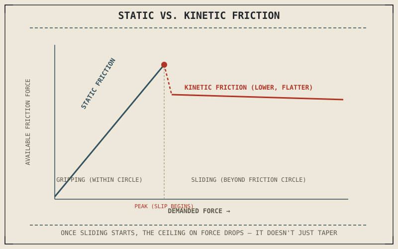

A tyre that's rolling and gripping is not, technically, sliding against the road at all — the rubber in contact with the pavement at any instant is momentarily stationary relative to it, even while the wheel spins and the motorcycle moves. That distinction is the entire reason a gripping tyre generates more usable force than a sliding one, and it comes down to two different kinds of friction this book has been relying on since Part VI without ever naming the difference directly.
Chapter 8.1 promised this chapter would revisit friction and finally name the static-versus-kinetic distinction. This is that chapter.
Static Friction: Grip Without Sliding
Static friction is the friction between two surfaces that are not sliding relative to each other, and it's what's actually present at a rolling, gripping tyre's contact patch — the rubber touching the road at any given moment isn't skidding across it, it's momentarily fixed against it while the wheel rotates around that point. Static friction can supply force up to a maximum limit before it gives way, and that maximum is generally higher than kinetic friction's maximum between the same two surfaces. This is precisely the mechanism behind Chapter 6.4's friction circle: the circle's radius is set by the maximum static friction available at the contact patch, and a tyre operating anywhere inside that circle is using static friction to generate cornering and braking force without sliding at all.
Kinetic Friction: What Happens Once Sliding Starts
Kinetic friction is the friction between two surfaces already sliding against each other, and it's what takes over the instant a tyre exceeds the friction circle's limit and actually starts to slip — the locked wheel Chapter 7.1 described, or a tyre sliding through a corner beyond its available grip. Kinetic friction's maximum is lower than static friction's maximum between the same surfaces, which is the actual physical reason a sliding tyre produces less stopping or cornering force than a gripping one, a fact Chapter 6.4 and Chapter 7.1 both stated without yet explaining why it's true. It isn't that a sliding tyre is somehow being punished — it's that the physical mechanism generating force has genuinely changed from one kind of friction to a weaker one.
A gripping tyre and a sliding tyre aren't using the same friction turned up or down — they're using two physically different kinds of friction, and kinetic friction's lower ceiling is the actual reason a slide always produces less usable force than a grip.

A graph showing available friction force rising to a peak under static friction as demanded force increases, then dropping to a lower, flatter kinetic friction level once the surface begins sliding past that peak.
Why This Explains ABS and Braking Both
This distinction retroactively explains two things this book already covered without the full mechanism. ABS, from Chapter 7.7, works by preventing a wheel from crossing from static into kinetic friction in the first place — cycling brake pressure to keep the tyre right at the edge of its static friction maximum rather than letting it slip past that peak into the weaker kinetic regime. And it explains why a rider who accidentally locks a wheel and then releases the brake, letting the wheel spin back up and regain static friction, recovers more stopping and steering capability almost instantly: the surfaces stop sliding, and the stronger static friction mechanism becomes available again immediately.
A Common Misconception, Cleared Up Early
It's natural to think of friction as one single quantity a tyre or brake pad simply "has," rising and falling smoothly with speed or pressure. Static and kinetic friction are genuinely two different physical regimes with two different ceilings, and the transition between them at the friction circle's edge isn't gradual — it's the point where the surfaces stop being momentarily fixed to each other and start actually sliding, and that transition is exactly what separates confident, controlled grip from a slide, in braking, cornering, and acceleration alike.
Where This Leads
Static friction is what actually lets a tyre generate the sideways force needed to hold a corner. Chapter 8.3 turns to that directly: cornering forces and the centripetal acceleration a leaned-over motorcycle constantly generates to hold a curved path.
Key Concepts to Remember
- Static friction governs a rolling, gripping tyre, since the rubber at the contact patch is momentarily fixed against the road rather than sliding.
- Kinetic friction takes over once a tyre actually slides, and its maximum is lower than static friction's, which is why a sliding tyre produces less force than a gripping one.
- The friction circle's edge is the boundary between static and kinetic friction, and ABS works by keeping braking force just inside that boundary.
Cross-References
| ← Ch. 6.4 | Introduced the friction circle without naming its underlying mechanism; this chapter identifies static friction as that mechanism's actual physical basis. |
| ← Ch. 7.7 | Described ABS cycling pressure to prevent lockup; this chapter explains that ABS is specifically preventing the static-to-kinetic friction transition. |
| → Ch. 8.3 | Covers cornering forces and centripetal acceleration, built directly on the static friction this chapter established. |